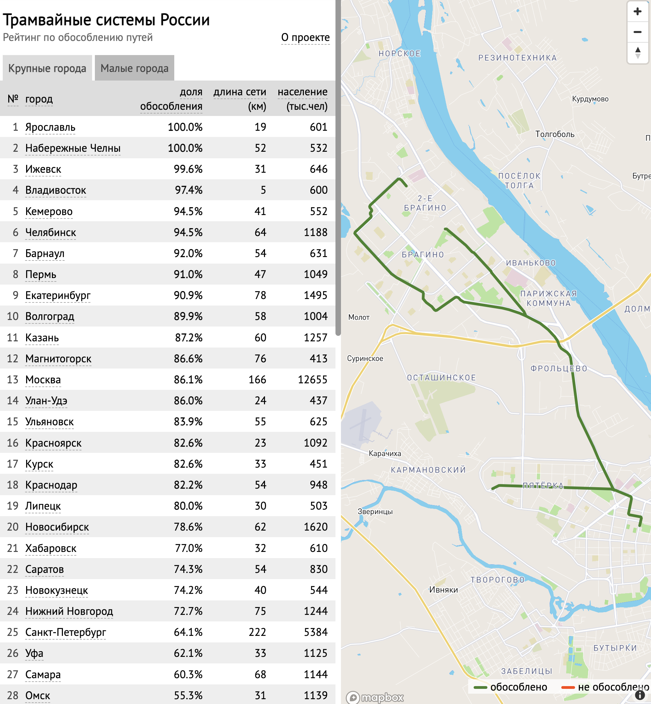
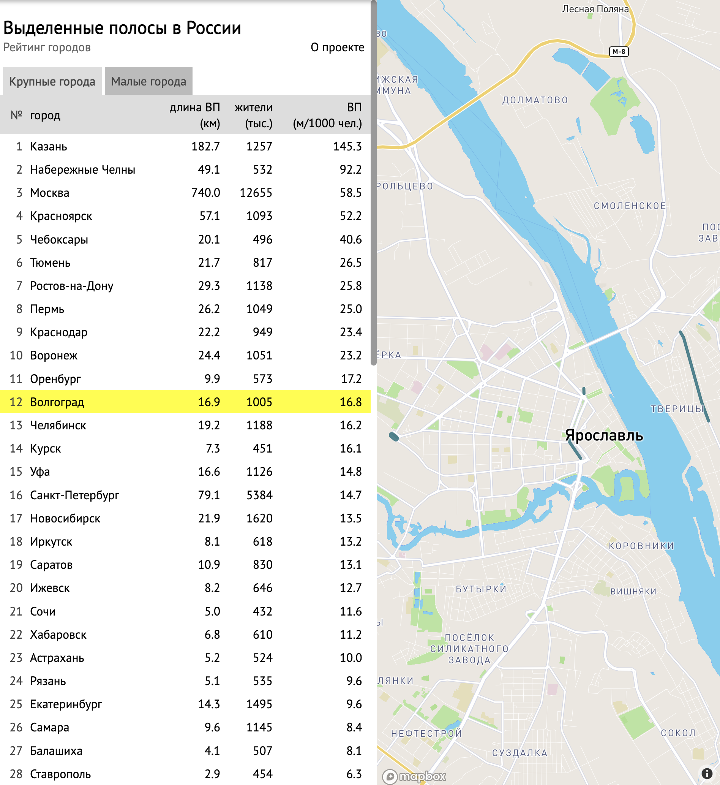

Junior Software developer
2022 - present
As a Junior software developer I've supporting buslanes and tramlanes.
These two projects was developed to show people the routes and numbers of the bus and tram lines in the Russian cities. So that community can improve public transport in Russian cities.
As a developer I've added to tabs (for big and small cities) on the buslanes web page.
Also, I've performed some minor design improvements based on users feedback. You can see difference between tramlanes design and buslanes design below.

In this role I learned how to read code, use Docker, Jinja, HTML/CSS, git.